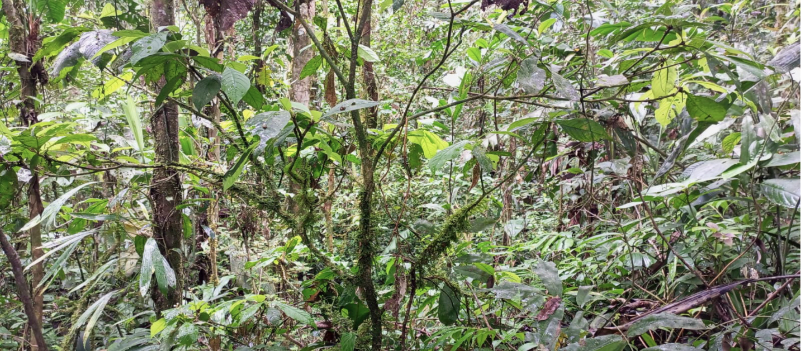

Nota: La fotografía muestra la Ñutshia bahu tsaʼu/Casa del Duende Blanco. Fuente: (Equipo intercultural ACT, IGAC, Pueblo Cofán, 2022)
1
Casa del Duende Blanco
Etnohistoria
En nuestra comunidad hay una señora que se llama Benilda Chachinoy, ella es hermana del abuelo Alfonso. Hace unos 40 años atrás, ella caminaba por la quebrada hacia arriba y vio en las playitas de arena, un niño pequeñito que bajaba, pero los pies apuntaban hacia arriba de la playa… los abuelos dicen que los pies del duende son al revés.
Grupo de Etnohistoria y Lingüística:
Pueblo Cofán: Cristián Chapal, Tatiana Agüinda; José Ildefonso Chachinoy, Grupo de Etnohistoria y Lingüística: Yamit Chapal, Miriam Ortiz, Tania Agüinda, Nixon Chapal, Fanny Chapal y otros miembros de la comunidad.
IGAC: Egna Márquez. ACT: Edwin Jaramillo.
Audio Etnohistoria Gobernador Pueblo Cofán,
Casa del Duende Blanco.
(Chapal, Audio Etnohistoria Casa del Duende blanco, 2022)
El nombre Ñutshia bahu tsaʼu se origina de la lengua Cofán y significa "Casa del Duende Bueno". Ñutshia es un término que significa "bueno", alude un valor positivo o una cualidad que se le atribuye a alguien por su naturaleza. Bahu es una expresión que significa "duende" como un ser que habita un lugar. Para el pueblo Cofán el duente es un ser espiritual que da sabiduría y fortaleza, ayuda a la protección y sanación del pueblo. Tsaʼu es una expresión que da cuenta de un lugar físico y espiritual para habitar.
...
Familia lingüística:
Aislada
Tipo:
Mitotopónimo
Lengua:
Cofán/Kofán
Categoría:
Información indígena
Subcategoría:
Sitio sagrado (SIG)
Elemento genérico:
árbol cosmogónico.

ASPECTOS HISTÓRICOS
Conformación del territorio
El pueblo indígena se autodenomina Kofán, los nombres alternos son Cofán y Kofane (Arango y Sánchez, 2004). Los Kofán se ubican en los municipios de Valle del Guamuéz, Orito, San Miguel y Puerto Asís, en el Departamento del Putumayo, en las comunidades Nueva Isla, Santa Rosa del Guamuez, Yarinal, Tssenene, Bocana de Luzón y Villa Nueva. (AMPII CANKE, 2021). La población estimada es de 1.816 según el CNPV 2018. La conformación del territorio data de épocas anteriores a la conquista (Arango y Sánchez, 2004).
Procesos de ocupación
Antes de la conquista varios grupos prehispánicos se dedicaban a comercializar productos, entre ellos el pueblo Cofán. En el Siglo XVI ya se mencionaba el pueblo por los descubrimientos acuíferos. Posteriormente, al territorio llegaron misiones capuchinas, jesuitas y franciscanas. Hacia los años sesenta, inician las actividades de extracción de petróleo con la llegada de la petrolera Texas. En los años sesenta se crean las reservas indígenas y en 1998 el pueblo Cofán recibe la constitución de sus resguardos.
Grupo de georreferenciación:

Pueblo Cofán
Cristián Chapal, Weimar Salazar

ACT
Linda García, Jaime Burgos